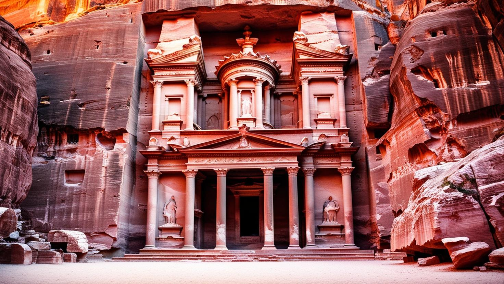
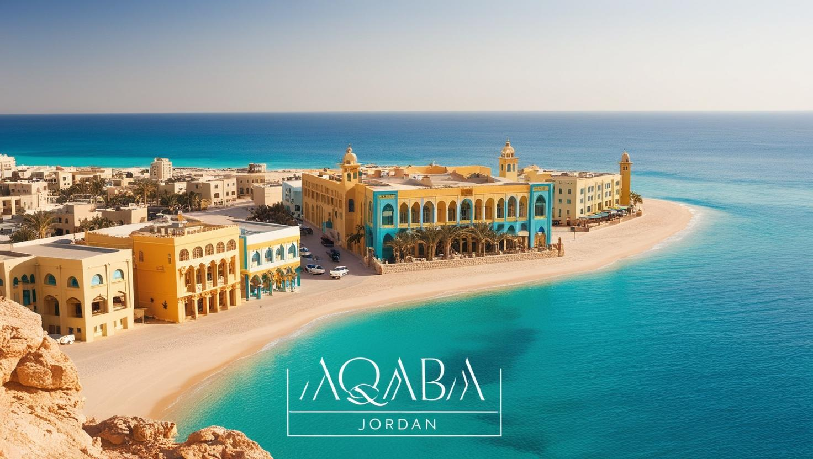
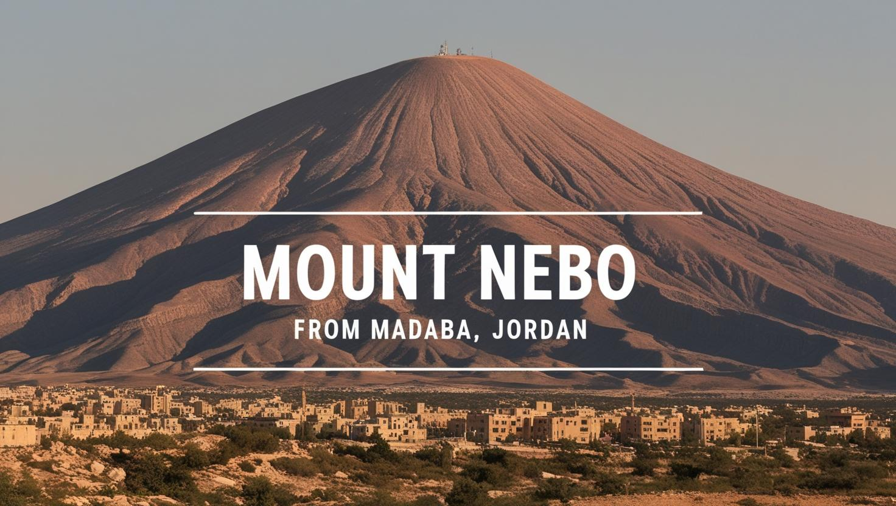

petra
Petra is a historic city in Jordan, famous for its rock-cut architecture and ancient Nabatean culture. It’s one of the New Seven Wonders of the World.
Wadi Rum

Wadi Rum is a breathtaking desert valley in Jordan, known for its red sand, unique rock formations, and Bedouin culture. It’s often called the "Valley of the Moon.""
Aqaba
Aqaba is a coastal city on the Red Sea, known for its beautiful beaches and vibrant coral reefs. It’s a popular spot for diving and snorkeling.
Salt

Salt is an ancient city in Jordan, known for its charming Ottoman-era architecture and historic streets. It’s a UNESCO World Heritage Site.
Karak Castle

Kerak Castle is a medieval fortress in southern Jordan, famous for its role during the Crusades. It offers panoramic views of the surrounding valleys.
Mount Nebo
Mount Nebo is a biblical site believed to be where Moses viewed the Promised Land. It offers breathtaking views of the Jordan Valley.